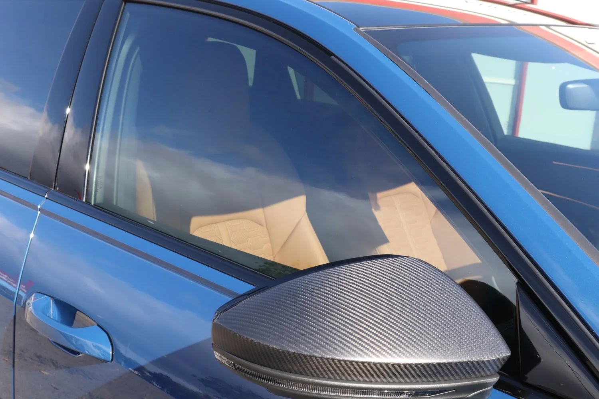
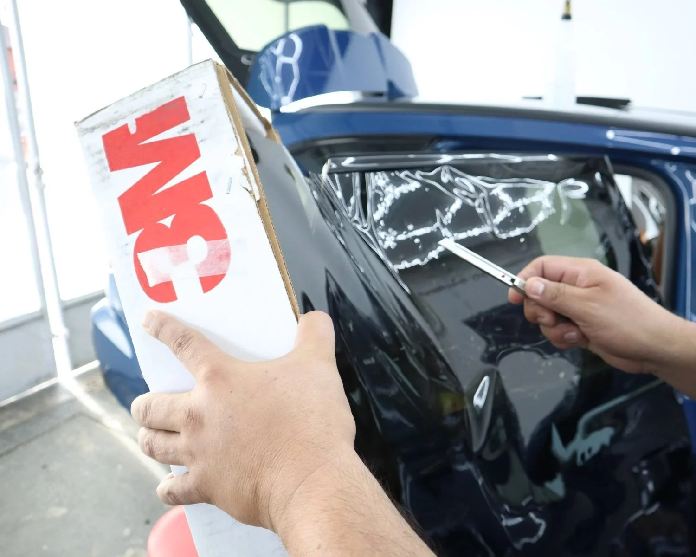
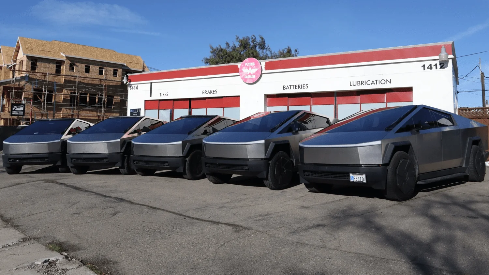

Get a quote · $249 tint
Ceramic window tint for your side windows + rear windshield.
Ceramic Window Tint
Side Windows + Rear Windshield
Stay cooler, drive more comfortably. Premium ceramic window tint designed for heat rejection, comfort, privacy, and a cleaner driving experience.
Call (925) 752-5705Elevate your vehicle’s look
Choose the perfect tint shade to enhance style, comfort, and protection while giving your vehicle a sleek factory finish.
 35%
35%
Preview only: the photo is darkened to suggest each shade.
Pick your shade
We offer multiple shade options including 70%, 50%, 35%, 20%, 15%, and 5% depending on film type and desired appearance.
Available in multiple shades depending on your preferred balance of privacy, visibility, and heat rejection.
Advanced heat blocking, designed for a cooler interior
Engineered for superior heat rejection, glare reduction, and all-day driving comfort without interfering with GPS, Bluetooth, or cellular signals.
UV protection
Blocks up to 99% of harmful UV rays to help keep your interior protected.
Heat rejection
Designed to reject up to 92% of infrared heat during hot California summers.
No interference
Works with your GPS, Bluetooth, and cellular signals.
Warranty
Fade resistant, with manufacturer warranties covering issues such as peeling, bubbling, and discoloration.
Figures from SosaaTintz for its ceramic window tint line. Best for daily drivers, maximum heat rejection, darker shade options, enhanced privacy and improved driving comfort.
Precision installations. Clean edges. Premium films.
Quality over shortcuts. We focus on precision installations, clean edges, premium films, customer education, and quality over shortcuts. Every vehicle receives attention to detail and aftercare support.
Heat rejection. Our premium ceramic window tint blocks up to 99% of harmful UV rays while reducing interior heat for a cooler, more comfortable drive.
Privacy. Tinting your vehicle’s windows makes it difficult for others to look for any valuables inside. Park in a busy city or parking lot worry free.
Interior protection. Tint helps reduce fading, cracking, and sun damage on leather, dashboards, screens, trim, and upholstery.

Precision tint installation for Tesla, luxury & daily driven vehicles
Get a quote
Send the form or call (925) 752-5705 for your $249 ceramic tint.
Choose your shade
Pick your balance of privacy, visibility, and heat rejection, from 70% to 5%.
Precision installation
Clean edges and attention to detail at 1414 Portola Ave, Livermore.
Aftercare & checkup support
Guidance, maintenance tips, and follow-up support. We recommend waiting 48 hours before rolling down your windows.
Tesla, Cybertruck, Porsche, Mercedes, BMW, Cadillac, and more


Trusted by drivers across Livermore, Pleasanton, Dublin, San Ramon, and the Bay Area
Window tint questions
What does the $249 offer include?
What type of window tint do you offer?
What is the difference between Ceramic tint and Crystalline tint?
What window tint shades do you offer?
How long before I can roll down my windows?
Is there a warranty on your window tint?
Does window tint help protect the interior?
Why choose SosaaTintz for window tint in Livermore?
What areas around Livermore do you service?
Stay cooler, drive more comfortably
Premium ceramic window tint for your side windows + rear windshield, now $249 at SosaaTintz in Livermore.